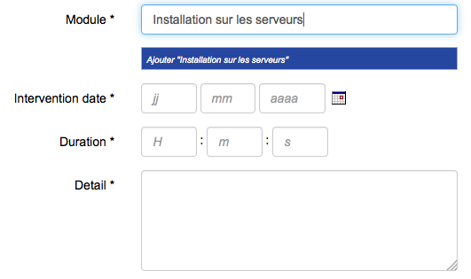
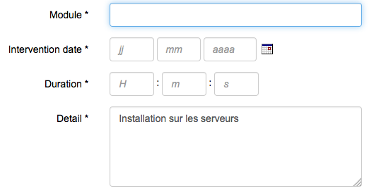

Hérite de WidgetBase
Ce widget permet de d’afficher un champ de recherche avec auto-complétion ayant pour cible un varset ou un dictionnaire (ce dernier pointn est à vérifier).
Le widget se base sur un dataquery dédié à la recherche, qui contient deux sections:
Lorsque l’utilisateur entre une chaine de caractère, celle-ci est transmise au serveur en tant que paramètre du dataquery dédié à la recherche, comme pour un rafraîchissmenet standard de dataset. Le contenu du dataset renvoyé par le serveur est utilisé pour afficher les résultats de la recherche, attention le code actuel ne met pas à jour le dataset, les données sont directement interprétéespar le widget. La sélection d’une réponse dans toutes celles qui ont été renvoyées provoque l’envoi des données relatives à la réponse dans le dataset cible, en mode insertion (insert), ou en mode mise à jour (replace).
Il est également possible de paramétrer le widget pour que si aucun résultat ne convient, on puisse ajouter la chaine de caractère saisie pour la recherche dans le dataset cible (mode quick add).
 Exemple:
Un varset module, et un varset intervention. Une intervention est liée à un module, l’objectif est que l’utilisateur sélectionne le module pour lequel il souhaite saisir son intervention (le varset intervention dispose d’une clé étrangère sur le varset module, nommée id_module).
Cette partie explique comment mettre en place un widget search en se basant sur l’exemlple ci-dessus
Varset “Module”
<?xml version="1.0" encoding="utf-8"?>
<varset name="module" prefix="mod" type="std" label="Module">
<var uid="1" id="name" type="string" mandatory="true" default_label="Name" default_short_label="Name">
<string length="50"/>
</var>
</varset>
Varset “Intervention”
<?xml version="1.0" encoding="utf-8"?>
<varset name="intervention" prefix="int" type="std" label="Intervention">
<var uid="1" id="id_module" type="fkey_varset" mandatory="true" default_label="Module" default_short_label="Module">
<fkey_varset varset_name="module"/>
</var>
<var uid="2" id="intervention_date" type="date" mandatory="true" default_label="Intervention date" default_short_label="Date"/>
<var uid="3" id="duration" type="time" mandatory="true" default_label="Duration" default_short_label="Duration"/>
<var uid="4" id="detail" type="text" mandatory="true" default_label="Detail" default_short_label="Detail"/>
</varset>
Dataquery cible
<dataquery id="intervention" table_name="{pj}_int_data" varset_name="intervention" table_alias="i">
<column_simple field_name="id_data" table_name="i" />
<column_simple field_name="intervention_date" table_name="i" />
<column_simple field_name="duration" table_name="i" />
<column_simple field_name="detail" table_name="i" />
<column_simple field_name="id_module" table_name="i" />
<!-- Permet l'ajout et la modification -->
<condition sql="{i.id_data}={param_id_data}">
<field field_name="id_data" table_name="i" alias="i.id_data" />
<variable alias="param_id_data" default="NULL">
<entry type="param" name="id_data" />
</variable>
</condition>
</dataquery>
Dataquery utilisé pour la recherche
<dataquery id="search_module" table_name="{pj}_mod_data" varset_name="module" table_alias="m">
<!-- Section 1: search dataquery required fields -->
<!-- Search condition -->
<match sql="{m.name} LIKE '%{search_string}%'" optional="true">
<field field_name="name" table_name="m" alias="m.name"/>
<variable alias="search_string" default="NULL" type="search">
<entry type="param" name="search_string"/>
</variable>
</match>
<!-- Search result to show -->
<!--column sql="" alias="head" type="string" length="150" /-->
<column sql="{m.name}" alias="body" type="string" length="150">
<field table_name="m" field_name="name" alias="m.name"/>
</column>
<!--column sql="" alias="footer" type="string" length="150" /-->
<!-- Value for search input field (optional) -->
<column sql="{m.value}" alias="field_value">
<field table_name="m" field_name="name" alias="m.value"/>
</column>
<!-- Condition used to set search input field after page load -->
<!-- Conditions are removed when match is used -->
<condition sql="{m.id_data}={param_id_data}">
<field field_name="id_data" table_name="m" alias="m.id_data"/>
<variable alias="param_id_data" default="NULL">
<entry type="dataset" name="intervention" field="id_module" row="current" />
</variable>
</condition>
<!-- Section 2: value(s) to store in target dataset -->
<!-- Used to fill id_module variable in intervention dataquery -->
<column sql="{m.id_data}" alias="id_module">
<field table_name="m" field_name="id_data" alias="m.id_data"/>
</column>
</dataquery>
La première section est constituée:
La seconde section contient toutes les colonnes qui seront exploitées pour remplir ou mettre à jour le dataset cible. Attention, les noms des colonnes doivent être identiques à ceux du dataset cible.
Widget search: la balise <search> appelle le widget search en lui passant les attributs suivants :
<search search_param="search_string" search_dataset="search_module" target_dataset="intervention" />
<option output="html" option_name="action_on_target" value="replace" />
Ne fonctionne que si “action_on_target” vaut “insert”, requiert l’option “quick_add_key”.
Cette option permet d’ajouter la chaine de caractère utilisée pour la recherche dans le dataset cible. Cela revient à dire que l’élément recherché n’existe pas en base, et qu’on souhaite l’ajouter.
- true : Permet à l’utilisateur d’ajouter une entrée dans le dataset cible
- false
<option output="html" option_name="enable_quick_add" value="true" />
<option output="html" option_name="quick_add_key" value="cp" />